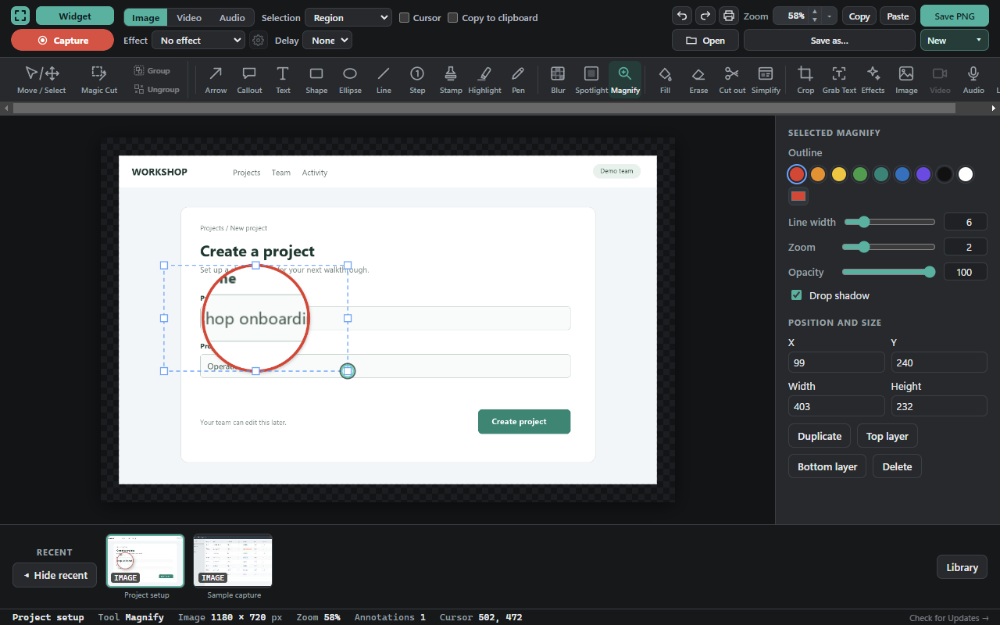
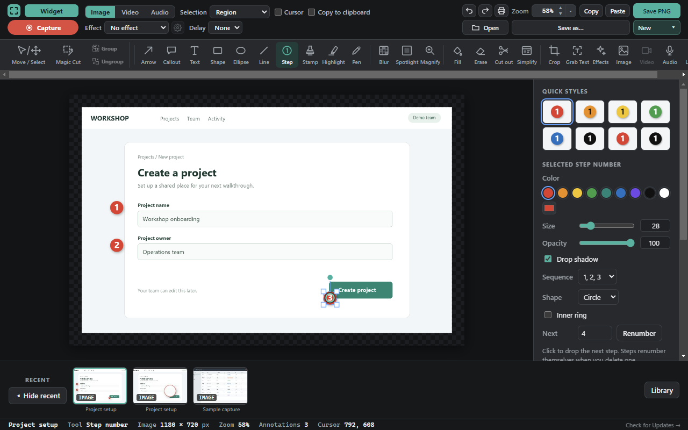
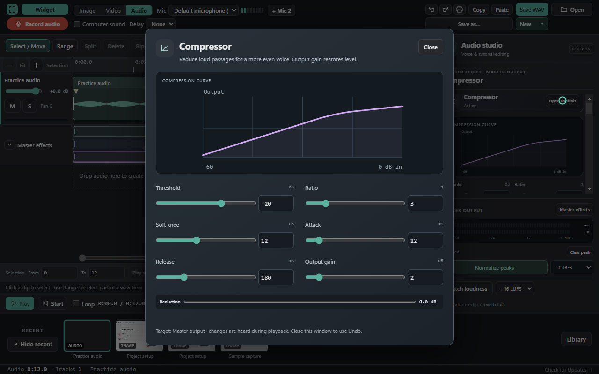
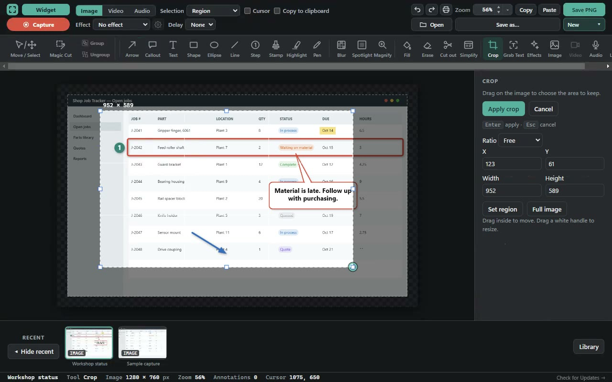
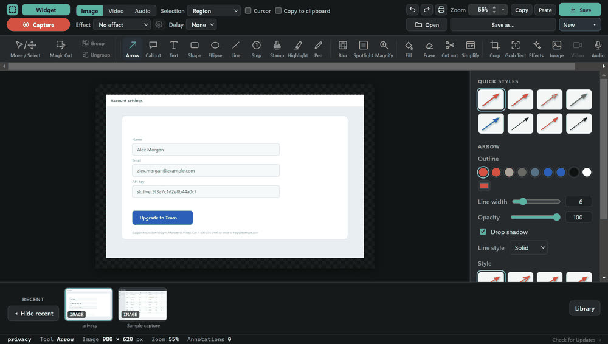
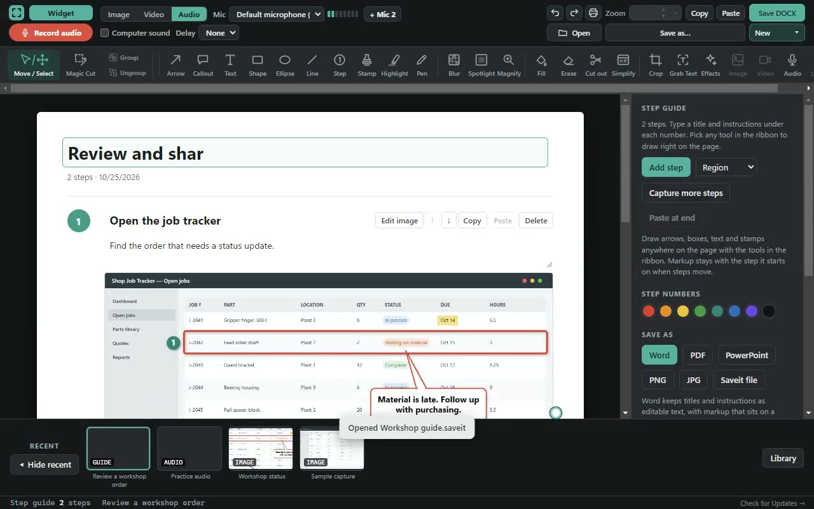
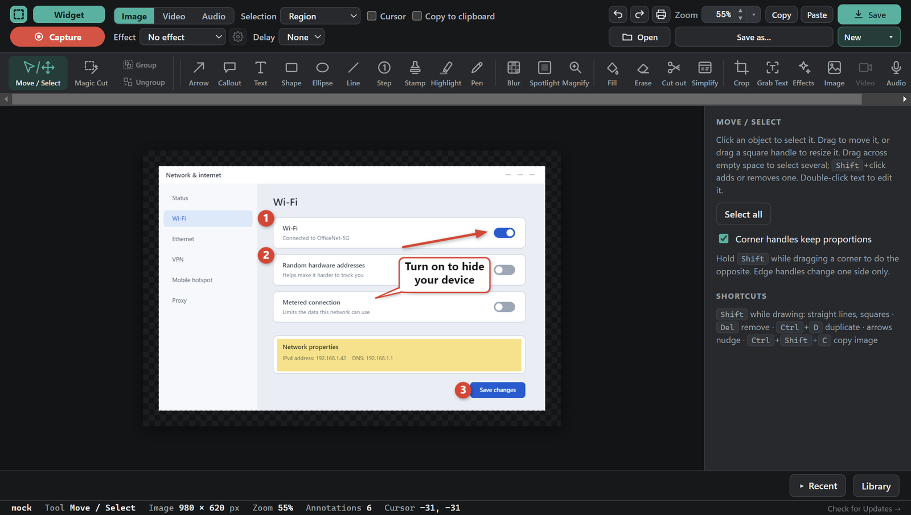
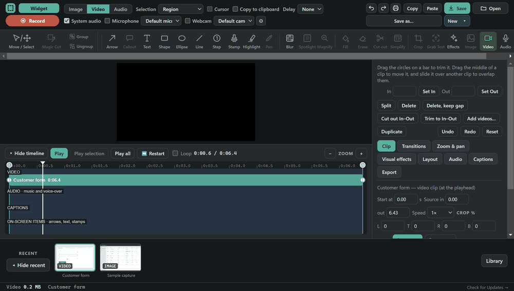
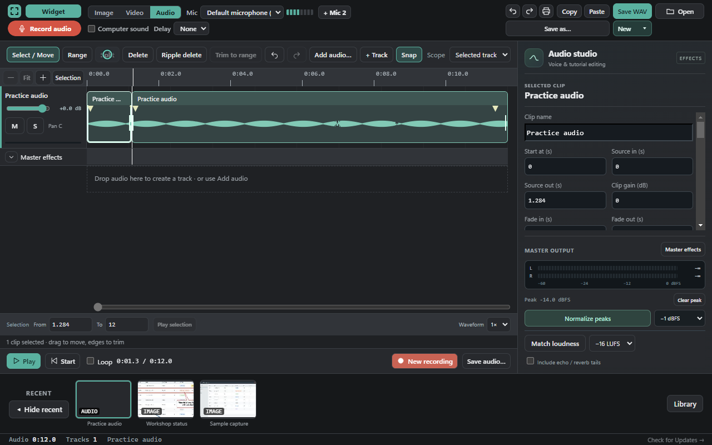
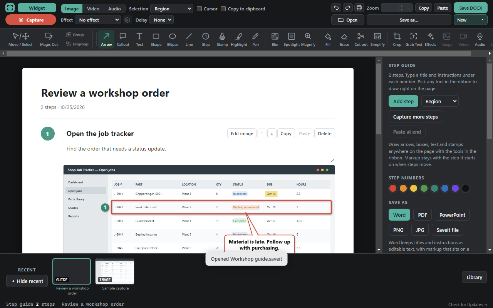

01
Capture precisely
Pick a region, choose a window, enter exact dimensions or capture a scrolling page.
Your free screen capture & recording studio
Screenshots that explain. Recordings that teach. Guides people can follow. Bring the picture, the sound and the instructions together in Save It.
The feature tour
Eleven short demonstrations. Choose a workflow and explore the controls in action.
Work on a real timeline: remove the parts you do not need, add a caption and focus attention with a zoom. Export the edited recording to share.
Open screenshot ↗Recorded in Save It using sample files. Demonstrations are silent; use the player controls to pause, seek or view full screen.
One app for a quick screenshot or a more detailed explanation.
Explore the whole toolkit ↓A quick look at the tools
Large, looping demonstrations with short explanations. Scroll to a feature to watch it, or open its full video for more detail.

GIF PREVIEWDrag a magnifier over the small text. The detail inside becomes larger. Undo and Redo compare the result.

GIF PREVIEWClick three places in the screenshot. Save It adds 1, 2 and 3 automatically. Undo and Redo revise the last marker.

GIF PREVIEWApply a voice preset and open the compressor controls. Preview the effected mix, then save an audio file.

GIF PREVIEWDrag the area to keep, enter its exact width and height, and apply the crop. Save the focused result as a PNG.

GIF PREVIEWBlur the private text, then spotlight the button. The rest of the screenshot dims to emphasize the next action.

GIF PREVIEWEdit the guide title, give a step a clear heading, and add instructions. Export the finished guide as a PDF.
GIFs play as they enter view and stop offscreen. Use Stop to pause one. Reduced-motion preferences are respected.

Draw attention to the part that matters. Add an arrow, give a detail a label, number the steps, or frame a cleaner crop.
Record a process with screen, microphone, system sound and an optional webcam. Use the editor to turn the take into something easier to follow.


Give audio the same care as the picture. Work on a waveform, arrange tracks and clips, and adjust the mix before exporting.
Capture a task as you click, or assemble a guide from screenshots. Add a useful title and a short instruction to every step.

From your editor to their screen
A picture for a chat. A video for a walkthrough. A document for the team. Choose the output you need.
Keep a clean screenshot, a compact picture, or a document people can open.
Choose a playable video or a short animated demonstration.
Export the edited mix for your next recording, tutorial or project.
Keep images and guides editable, or reopen recordings in the local library.
Format options depend on the type of project you’re working on. Copy finished screenshots directly into email or chat, too.
More of the toolkit
Explore the details that help a capture become a useful explanation.
Pick a region, choose a window, enter exact dimensions or capture a scrolling page.
Arrows, callouts, shapes, numbered steps, stamps and freehand drawing.
Highlight, spotlight and magnify the detail someone needs to see.
Blur private details, crop the clutter, and copy the finished screenshot.
Crop, rotate, flip, resize the canvas, fill, erase, simplify and cut out.
Grab Text uses Windows OCR to recognize words in screenshots.
Split, trim, move and duplicate clips on a timeline with undo and redo.
Use captions, timed annotations, zoom and pan, layouts and transitions.
Edit multiple tracks, adjust levels, add effects and save a mixed audio file.
Capture your clicks, edit each step, and export illustrated instructions.
Search the library, rename items, use folders and restore deleted captures.
Use keyboard shortcuts and the compact capture widget between edits.
Made for real work
Turn a process into a walkthrough people can return to.
Point to the exact detail instead of writing another paragraph.
A marked-up image or short recording helps people follow along.
Free software. Local files.
Save It keeps captures, recordings and projects locally. There is no account to create and no cloud library to set up.
Your first capture
Download the Windows installer, open it, and click Install. It installs for your user account.
Press Print Screen and drag over the area you want. Your capture opens in the editor.
Draw an arrow, add a callout, or crop the image. Copy the result into a message or save a file.
Already installed? Keep the Save It how-to guide handy for screenshots, recordings, audio, guides and sharing.
Windows may show an unrecognized-publisher warning because the installer is not yet Authenticode-signed. You can review the source on GitHub; in-app update packages are checked with Save It’s release signature before installation.
A few things to know
Have a problem or an idea for the app? Open an issue on GitHub.
Yes. Save It is free and open source under the MIT license. There is no account, subscription or watermark.
Yes. Save It is built for Windows 10 and Windows 11. It installs for your user account and does not need administrator rights.
Yes. Record a region, a window or the full screen with microphone, system sound and an optional webcam. Edit the result and export MP4, WebM or GIF.
They stay on your computer in the Save It library. When you export, you choose the destination. New exports start in Documents/Saveit Exports, and Save It remembers your chosen folder for each format.
Click Check for Updates in the application. Save It checks the latest GitHub release, verifies the signed package and preserves your library and settings during the update.
The installer is not yet Authenticode-signed, so Windows may show an unrecognized-publisher warning. The source code is public on GitHub. In-app update packages are separately verified with Save It’s release signature.
Yes. Save an image or guide as a .saveit file to reopen it with its editable content. Audio and video projects also remain editable in your local Save It library.
No. Captures, recordings and projects stay local. Save It connects to GitHub to obtain its runtime during setup and when you ask it to check for updates.
Make your next explanation a visual one
Free for Windows 10 and Windows 11. No account. No watermark.